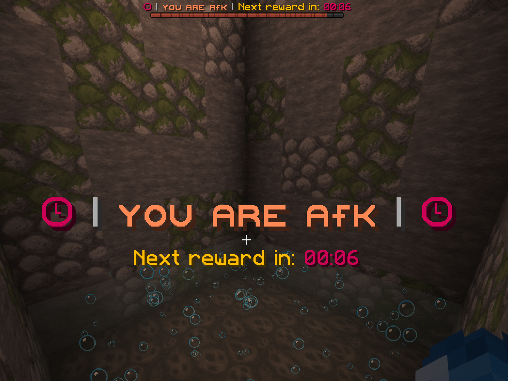

The AFK Zone is a dedicated area designed to reward players even while they are away from their keyboard.
For every minute spent in the AFK Zone, you will receive a random reward. The longer you remain there, the more rewards you will collect, giving you additional chances to obtain valuable resources over time.
You can access the area at any time using the /afk command, which teleports you directly to the AFK Zone.
You are also free to leave the zone whenever you wish to continue exploring, building, trading, fighting, or progressing on the server.
The available rewards and their drop chances are as follows:
5% – 1 Shard
15% – 2 Shards
25% – 3 Shards
40% – 5 Shards
10% – 10 Shards
4% – 25 Shards
1% – 100 Shards
The AFK Zone is a simple way to earn extra rewards while taking a break, making every minute spent online a little more rewarding.
